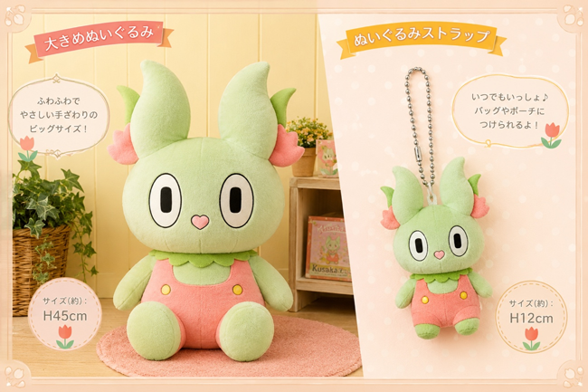

くさぴょんの新グッズ発売！
2026年3月2日、日下部ゆうえんちは新グッズの発売を開始しました。 今回の新グッズは、マスコットキャラクター「くさぴょん」をモチーフにしたぬいぐるみや文房具など、かわいいアイテムが盛りだくさんです。
くさぴょんの新グッズは、園内のショップで購入することができます。 ぜひこの機会に、くさぴょんの魅力あふれるグッズを手に入れてください！

2026年3月2日、日下部ゆうえんちは新グッズの発売を開始しました。 今回の新グッズは、マスコットキャラクター「くさぴょん」をモチーフにしたぬいぐるみや文房具など、かわいいアイテムが盛りだくさんです。
くさぴょんの新グッズは、園内のショップで購入することができます。 ぜひこの機会に、くさぴょんの魅力あふれるグッズを手に入れてください！
